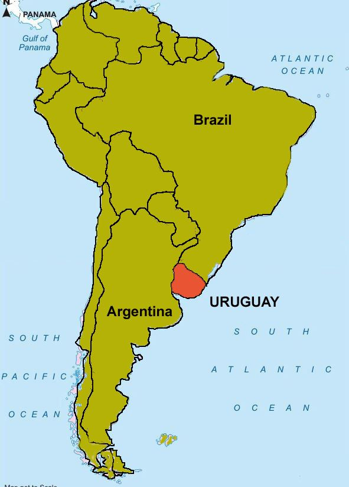

Welcome to Uruguay!
|
Uruguay, officially the Oriental Republic of Uruguay or the
Eastern Republic of Uruguay (Spanish:
República Oriental del Uruguay), is a country in South America. It shares borders with Argentina
to
its west and southwest and Brazil to its north and northeast, while bordering the Río de la
Plata to
the south and the Atlantic Ocean to the southeast. It is part of the Southern Cone region of
South
America. Uruguay covers an area of approximately 181,034 square kilometers (69,898 sq mi) and
has a
population of an estimated 3.4 million, of whom around 2 million live in the metropolitan area
of
its capital and largest city, Montevideo. |
 |
EtymologyThe country name of Uruguay derives from the namesake Río Uruguay, from the Indigenous Guaraní language. There are several interpretations, including "bird-river" ("the river of the uru, via Charruan, urú being a common noun of any wild fowl). The name could also refer to a river snail called uruguá (Pomella megastoma) that was plentiful across its shores. One of the most popular interpretations of the name was proposed by the renowned Uruguayan poet Juan Zorrilla de San Martín, "the river of painted birds"; this interpretation, although dubious, still holds an important cultural significance in the country. In Spanish colonial times, and for some time thereafter, Uruguay and some neighboring territories were called Banda Oriental [del Uruguay] ("Eastern Bank [of the Uruguay River]"), then for a few years the "Eastern Province". Since its independence, the country has been known as "República Oriental del Uruguay", which literally translates to "Republic East of the Uruguay [River]". However, it is officially translated either as the "Oriental Republic of Uruguay" or the "Eastern Republic of Uruguay". MilitaryThe Uruguayan armed forces are constitutionally subordinate to the president, through the minister of defense. Armed forces personnel number about 14,000 for the Army, 6,000 for the Navy, and 3,000 for the Air Force. Enlistment is voluntary in peacetime, but the government has the authority to conscript in emergencies. Since May 2009, homosexuals have been allowed to serve in the military after the defense minister signed a decree stating that military recruitment policy would no longer discriminate on the basis of sexual orientation. In the fiscal year 2010, the United States provided Uruguay with $1.7 million in military assistance, including $1 million in Foreign Military Financing and $480,000 in International Military Education and Training. Uruguay ranks first in the world on a per capita basis for its contributions to the United Nations peacekeeping forces, with 2,513 soldiers and officers in 10 UN peacekeeping missions. As of February 2010, Uruguay had 1,136 military personnel deployed to Haiti in support of MINUSTAH and 1,360 deployed in support of MONUC in the Congo. In December 2010, Uruguayan Major General Gloodtdofsky, was appointed Chief Military Observer and head of the United Nations Military Observer Group in India and Pakistan. |
|